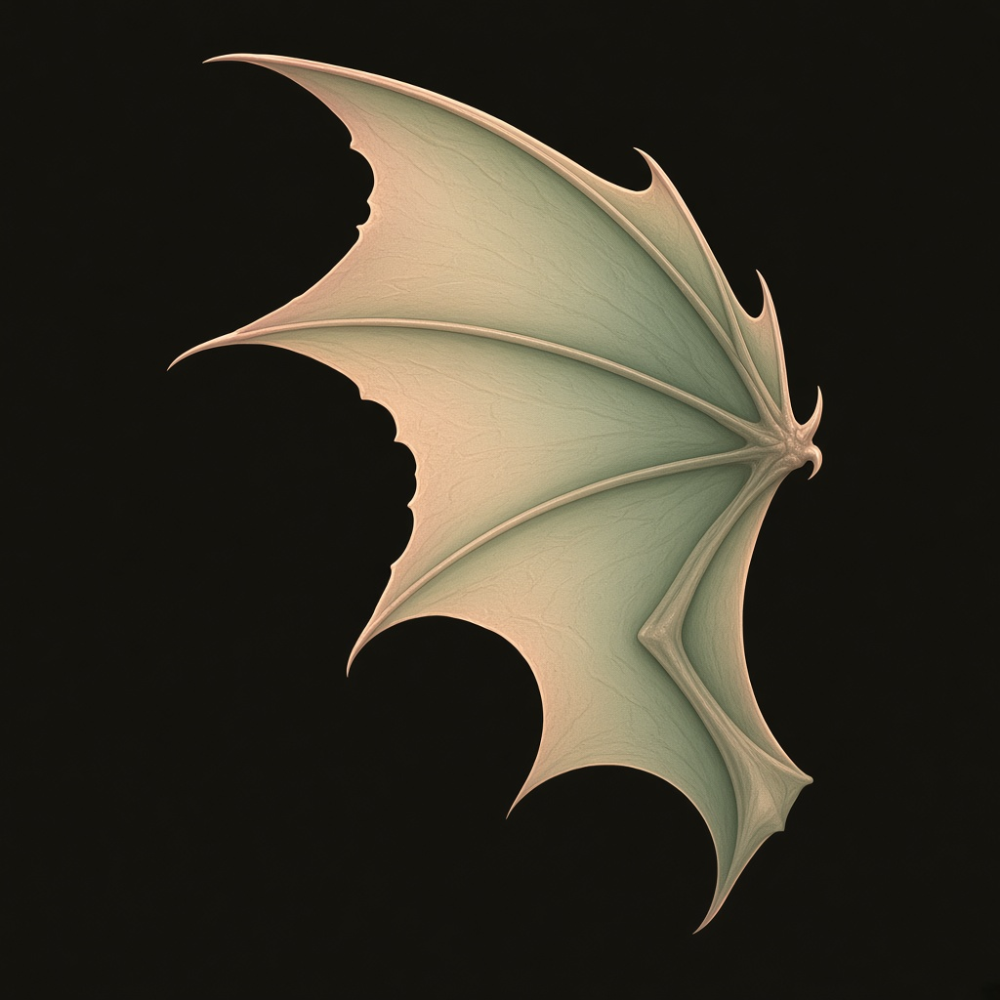
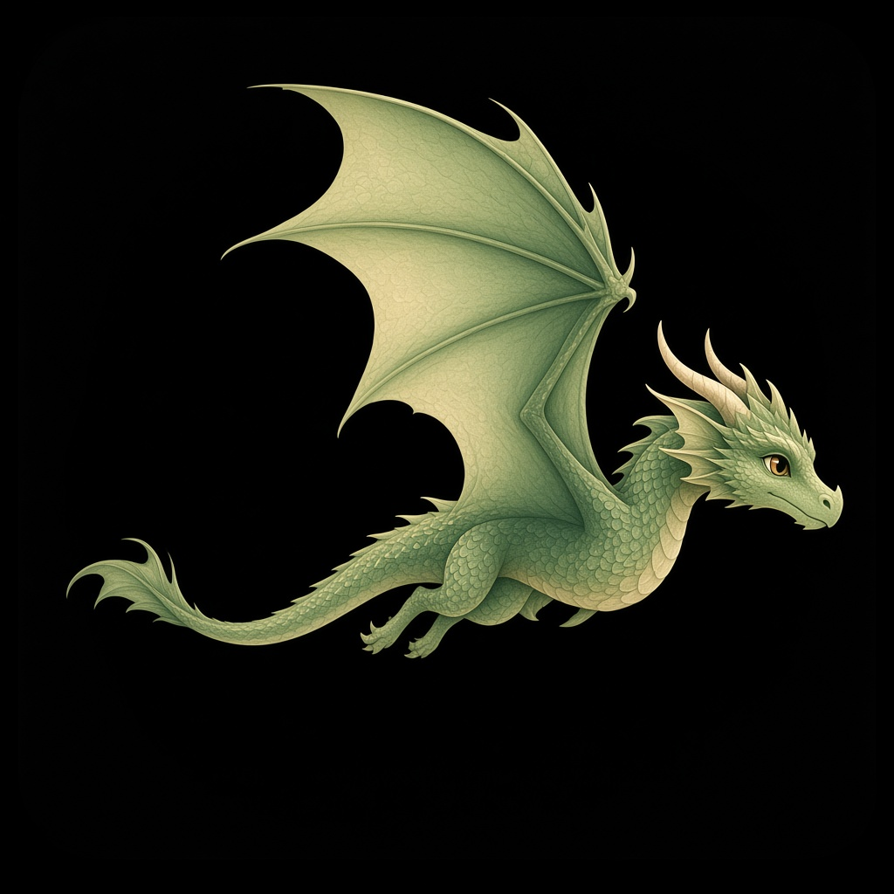
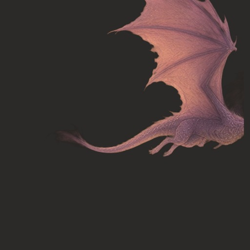

ENGL 1301Davis Writing StudioOption G
Dragon wing
Illustrated wing, fills the circle.
Trail-School style marks for the charcoal circle — wing, crown, head, or the studio dragon cutout.

ENGL 1301Davis Writing StudioOption G
Dragon wing
Illustrated wing, fills the circle.
 ENGL 1301Davis Writing Studio
ENGL 1301Davis Writing StudioOption H
Crown / circlet
Ornate dragon-motif crown.

ENGL 1301Davis Writing StudioOption I
Dragon head
Profile head, same storybook look as the floats.

ENGL 1301Davis Writing StudioOption J
Studio dragon
Crop of the soft green 1301 float dragon already on the site.
Option F
Course number
Plain “1301” if you’d rather skip a picture mark.